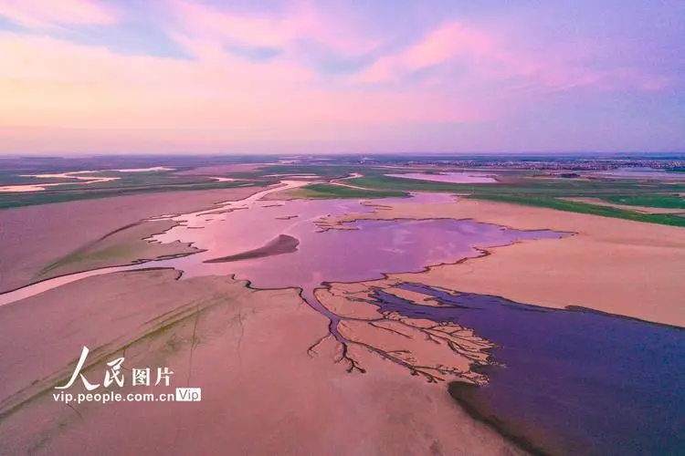
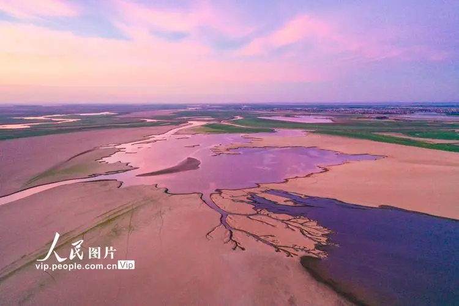
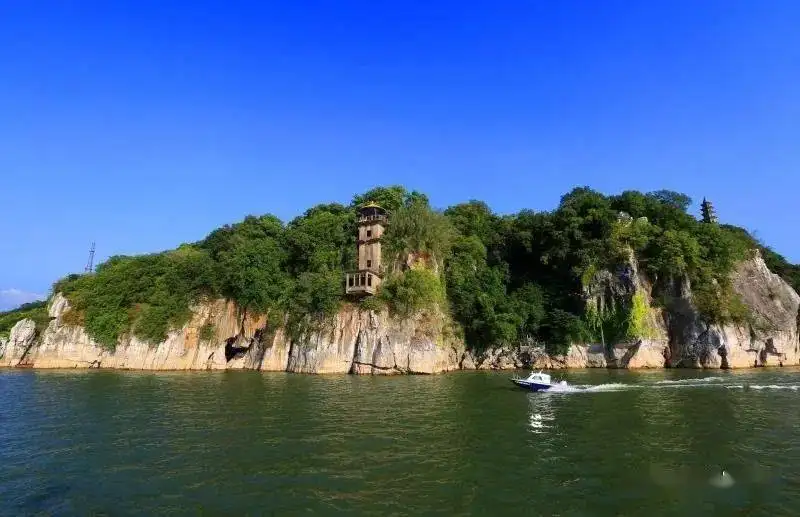
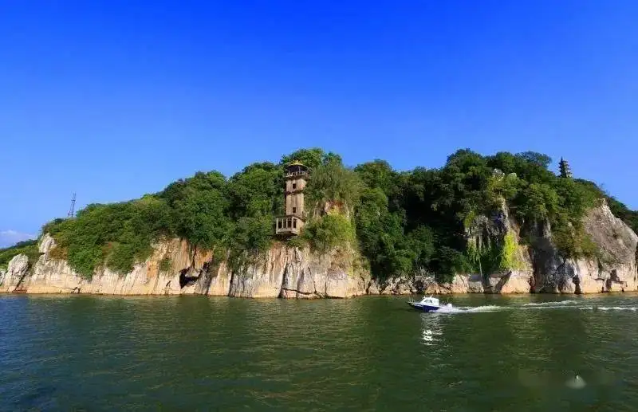

湖口介绍
湖口县，隶属江西省九江市，位于江西省北部、九江市东部、长江中下游南岸、鄱阳湖北畔，赣皖鄂三省交界处，介于北纬29° 30'- 29°51' 、东经116°8'-116°25' 之间。湖口县面积669平方公里 ,东邻彭泽县，南接都昌县，西与濂溪区、柴桑区、庐山市隔鄱阳湖相望，北与安徽省安庆市宿松县襟长江为界。湖口县属亚热带季风气候区，热量丰富，雨量充沛，四季分明。截至2018年，湖口县下辖5乡7镇2场，县政府驻地双钟镇。 2021年，湖口县户籍人口28.90万人，常住人口22.21万人。
湖口地处湖北、安徽、江西三省交界，由长江与鄱阳湖交汇口而得名，是“江西水上北大门”，素有“江湖锁钥，三省通衢”之称。以名江、名湖、名山、名城为依托，确立了在鄱阳湖水上旅游的龙头和中心地位，形成了“二日游”格局。是“中国民间艺术之乡”、“戏曲之乡”和“中华诗词之乡”。境内有世界文化遗产景观、全国教材景观示范基地、国家级森林公园、国家级文物保护单位各1处，国家级4A景区2处、3A景区1处。

 

 
